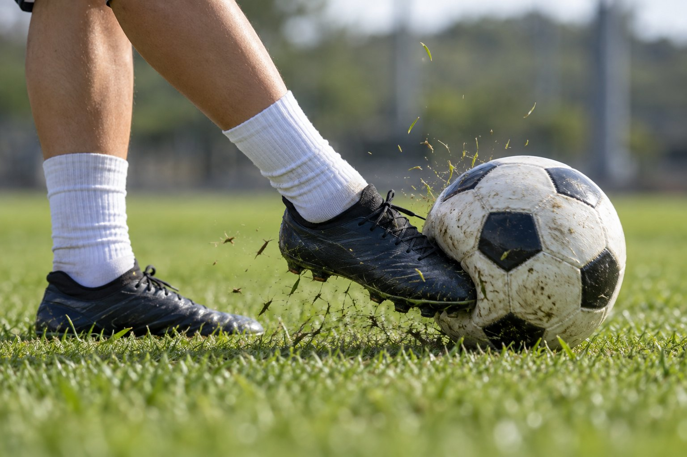
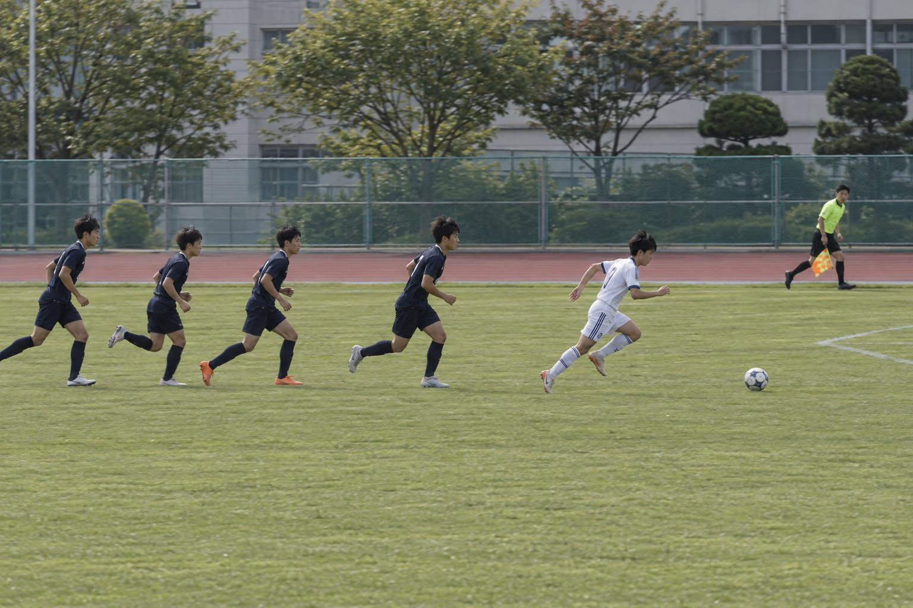
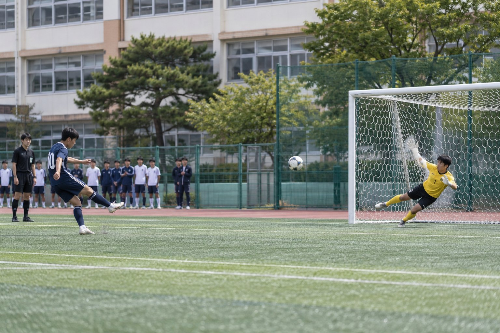

질문에 답하며 배우는 킥, 오프사이드, 슛 각도, 포메이션
이 학습지의 사진은 AI로 생성한 이미지입니다. → 키 또는 아래 버튼으로 넘어가요.

공이 발에 닿는 순간, 발등(신발끈 부분)이 공의 중심을 맞히고 있어요.
디딤발은 공 바로 옆에 두고, 발목을 단단히 고정한 채 발등으로 공의 가운데를 차요. 찬 뒤에는 다리를 목표 방향으로 끝까지 뻗어요.
발 안쪽은 공과 닿는 면이 넓고 평평해서 방향을 정확하게 맞추기 쉬워요. 그래서 짧은 패스의 기본이에요.
발을 바깥쪽으로 돌려 안쪽 면으로 공을 밀어 줘요.
위에서 본 모습이에요. 발 면의 각도를 바꾸면 튕겨 나가는 방향이 달라져요.
각도는 발 면에 수직인 점선(법선)을 기준으로 재요. 그래서 발 면을 돌리면 공이 가는 방향을 정할 수 있어요. 실제로는 공이 에너지를 조금 잃어서 약간 달라져요.

부심은 수비 라인과 공격수의 위치를 함께 봐요.
골키퍼도 수비수로 세어서, 수비수 끝에서 두 번째 선수가 기준선이에요. 나란히 서 있으면 오프사이드가 아니에요.
오프사이드 위치에 있는 것만으로는 반칙이 아니고, 그 상태에서 패스를 받아 플레이에 관여하면 반칙이에요.
주황색 선수(A)를 눌러 끌어 보세요. 점선이 수비수 끝에서 두 번째 선수의 위치예요.
공격수 A를 수비 라인과 정확히 나란히 놓으면 어떻게 될까요?
끝에서 두 번째 수비수보다 골대에 더 가까워야 오프사이드예요. 같은 선은 괜찮아요.
스로인으로 던져 준 공을 받은 공격수가 수비수 끝에서 두 번째보다 골대에 가까이 있었다.
스로인, 골킥, 코너킥에서 직접 받은 공은 오프사이드가 아니에요.
패스가 출발하는 순간, 공격수가 수비수 끝에서 두 번째보다 골대에 가까이 있었다. 그 공격수가 패스를 받았다.
오프사이드 위치에서 패스를 받았으니 간접 프리킥이에요.
패스가 출발하는 순간, 공격수가 수비수 끝에서 두 번째 선수와 나란히 서 있었다.
같은 선은 오프사이드가 아니에요.
공격수가 자기 진영(하프라인 뒤)에서 수비수들보다 앞서 있었다.
오프사이드는 상대 진영에서만 적용돼요.
잔디를 눌러 슛 위치를 정해 보세요. 두 골대 기둥 사이의 각도를 재요.
골대 중심에서 같은 거리라면, 슛 각도가 가장 큰 곳은?
페널티 지점(골대 11m 정면)에서는 두 골대 기둥 사이 각도가 약 37°예요. 옆으로 비껴 설수록, 멀어질수록 각도는 줄어요.
잔디를 눌러 보세요.
11m ÷ 초속 27.8m(시속 100km) ≈ 0.4초예요. 사람의 단순 반응 시간이 약 0.2초라서, 공을 본 뒤에 움직이면 몸을 날릴 시간이 거의 없어요.
그래서 골키퍼는 키커의 디딤발과 몸 방향을 보고 미리 판단해요.

페널티 지점에서 골대까지는 11m예요.
4-4-2에서 가운데 숫자 4는 어떤 선수의 수일까요?
골키퍼는 빼고 세어요. 4-4-2는 수비수 4명, 미드필더 4명, 공격수 2명이에요.
짝의 발 앞으로 공을 정확히 보내요.